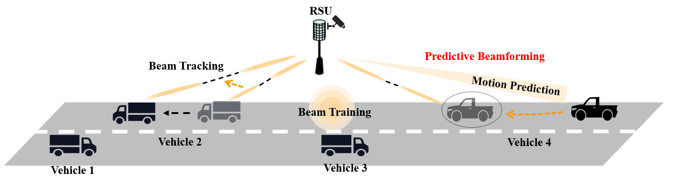

Multi-Modal Information Assisted Transceiver Design
1. Multi-Modal Information Assisted Channel Estimation: In 5G, the application of MIMO and other technologies brings great challenges to channel estimation. When communication systems utilize MIMO, traditional channel estimation methods are faced with problems of high complexity and low accuracy. In this condition, the task of channel estimation can be facilitated by leveraging the sparsity of mmWave channels [1]. The effective usage of the sparsity of the mmWave channel plays a key role in accurate channel estimation. Our team focuses on how to use deep learning methods to extract and fuse the various features of multi-modal information, and ultimately improve the accuracy of channel estimation in different scenarios.

2. Multi-Modal Information Assisted Predictive Beamforming: When the communication systems used in the highly-dynamic scenarios utilize MIMO and operate in the mmWave frequency band, the high-speed relative movement between the transmitter and the receiver will result in the need for frequent configuration and alignment of the “pencil-like” beam. Our group focuses on how to use deep learning methods to extract and learn the state evolution features of moving objects from multi-modal information [2]. we try to use multi-modal sensory data as well as wireless data to efficiently and accurately track the object’s motion parameters and complete the predictive beamforming, thereby reducing the communication overhead and high latency.
Reference
[1] S. Gao, X. Cheng, and L. Yang, “Estimating doubly-selective channels for hybrid mmwave massive mimo systems: A doubly-sparse approach,” IEEE Transactions on Wireless Communications, vol. 19, no. 9, pp. 5703-5715, May. 2020.
[2] X. Cheng, H. Zhang, Z. Yang, Z. Huang, S. Li, and A. Yu, “Integrated sensing and communications for Internet of vehicles: current status and development trend”, Journal on Communications, vol. 43, no. 8, pp. 188-202, Aug. 2022.
Copyright © Peking University | Address: No.2 Science Building, Peking University, No.5 Yiheyuan Road, Haidian District, Beijing, P.R. China